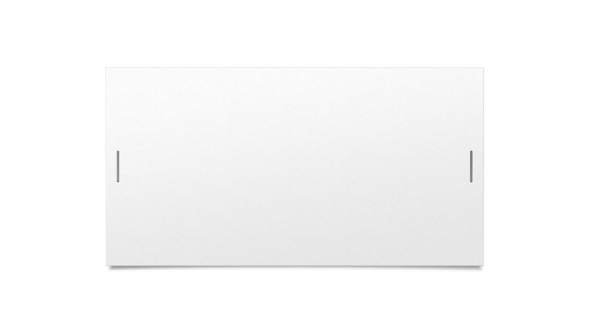
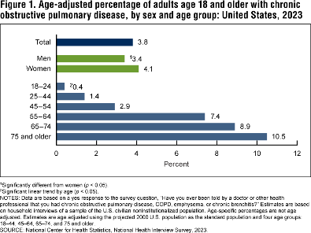
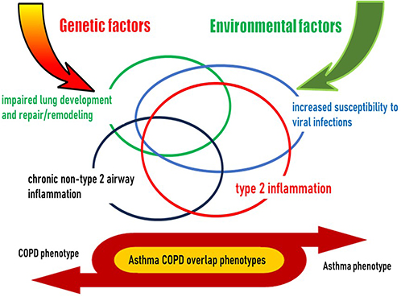
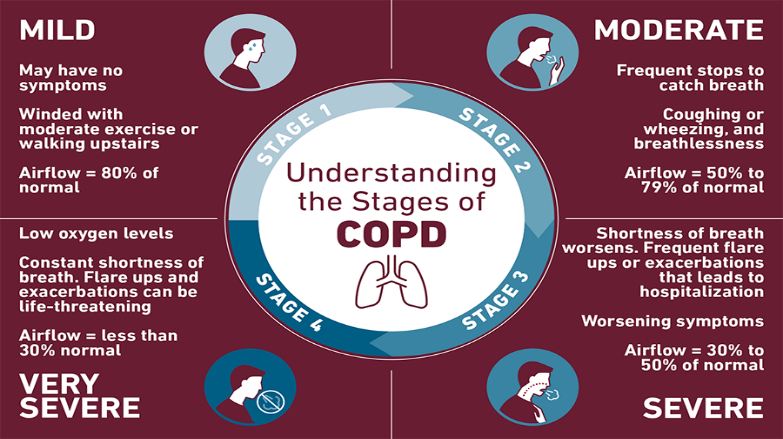
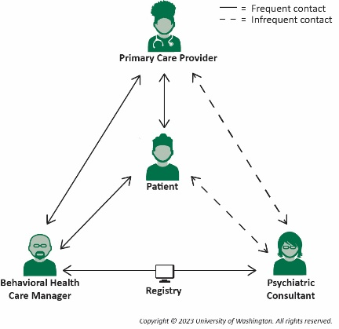
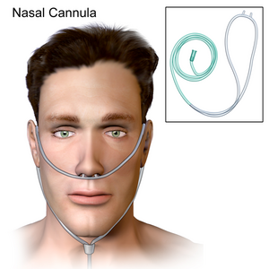
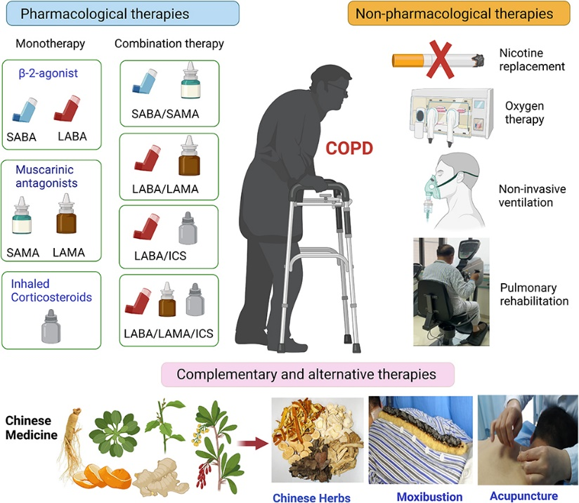

Evidence-based clinical assessment, controlled oxygenation titration, pharmacological rescue, non-invasive ventilation, and CNO Three-Factor RN/RPN scope delineation.
Chronic Obstructive Pulmonary Disease (COPD) represents a heterogeneous lung condition characterized by chronic respiratory symptoms (dyspnea, cough, sputum production) due to abnormalities of the airways (bronchitis, bronchiolitis) and/or alveoli (emphysema) that cause persistent, often progressive, airflow limitation.
Professional Frameworks: This analysis integrates evidence-based assessment and inpatient stabilization protocols guided by the Global Initiative for Chronic Obstructive Lung Disease (GOLD 2024) and the College of Nurses of Ontario (CNO) Professional Standards.
Comparison of normal patent bronchioles with the chronic inflammatory remodeling, hypersecretion, and alveolar septal breakdown seen in advanced COPD.
Acute Deterioration: Mr. J.D. presents with a 4-day history of worsening shortness of breath, severe orthopnea, productive cough with thick dark-green purulent sputum, and marked failure to mobilize at home.
Baseline Functional Profile: Previously able to mobilize 50 meters with rollator walker; now breathless when speaking in short 2-3 word sentences at rest.
COPD is defined as a common, preventable, and treatable chronic lung disease characterized by chronic respiratory symptoms due to abnormalities of the airways and/or alveoli that cause persistent, often progressive, airflow limitation.
Chronic inflammation leads to airway remodeling, luminal narrowing, peribronchiolar fibrosis, and loss of alveolar radial traction holding airways open during exhalation.
The Exacerbation Spiral: Each severe acute exacerbation accelerates permanent lung function decline (loss of FEV1), increases cardiovascular risks (myocardial infarction, stroke), and carries an inpatient mortality rate of up to 10% (Bartlett-Pestell et al., 2023).

Over 70% of total healthcare expenditures related to COPD are directly driven by acute hospital admissions and intensive care unit (ICU) bed days.
Inhaled cigarette smoke and particulates recruit neutrophils and alveolar macrophages that release matrix metalloproteinases (MMPs) and neutrophil elastase, overwhelming endogenous alpha-1 antitrypsin defenses (Nasirova, 2025).

Loss of radial elastic tethering causes premature dynamic airway collapse on expiration, causing air trapping, barrel chest deformity, diaphragm flattening, and increased work of breathing.
Chronic particulate irritation triggers epidermal growth factor receptor (EGFR) signaling, causing hypertrophy of submucosal tracheobronchial glands and goblet cell hyperplasia (Xu et al., 2024).

Retained mucus creates an ideal nidus for chronic bacterial colonization (e.g., Haemophilus influenzae, Streptococcus pneumoniae, Moraxella catarrhalis).
Clinical Correlation for Mr. J.D.: Synergistic interaction between 45 pack-year cigarette use and 40 years of occupational silica/dust exposure accelerated his severe FEV1 loss.
| Clinical Feature | Emphysema ("Pink Puffer") | Chronic Bronchitis ("Blue Bloater") |
|---|---|---|
| Primary Symptom | Severe progressive dyspnea | Chronic productive cough with heavy sputum |
| Body Habitus | Thin, cachectic (muscle wasting) | Often overweight, plethoric |
| Thorax Exam | Barrel chest (increased AP diameter) | Normal AP diameter, coarse rhonchi/wheezing |
| Gas Exchange | Normocapnic initially; hyperventilation | Chronic hypercapnia, hypoxemia, early cyanosis |
| Cardiac Sequel | Late cor pulmonale | Early cor pulmonale & peripheral edema |

Pursed-lip breathing creates positive expiratory end-pressure (PEEP), splinting collapsible airways open; tripod position optimizes accessory muscle kinematics.

Routine assessment of 6-Minute Walk Test (6MWT) distance and ability to perform basic self-care activities (showering, cooking) without acute desaturation.
Post-Bronchodilator Spirometry: Fixed airflow limitation confirmed when FEV1 / FVC ratio < 0.70.
GOLD Severity Staging (based on post-BD FEV1 % predicted):

Chest X-ray demonstrates low flat diaphragms, hyperlucent lung fields, increased retrosternal airspace, and tubular heart silhouette.
Rescue Medication: Short-acting beta-agonist (SABA: Salbutamol) PRN for immediate symptom relief.

Structured 8–12 week supervised exercise training reduces dyspnea, improves exercise capacity (6MWT), enhances health-related quality of life, and slashes 30-day hospital readmissions by 35%.
An acute event characterized by worsening of the patient's respiratory symptoms that is beyond normal day-to-day variations and leads to a change in medication (GOLD, 2024).
The cardinal symptoms determining bacterial involvement and treatment urgency:
1. Increased Dyspnea: Marked escalation in breathlessness at rest or minimal exertion.
2. Increased Sputum Volume: Significant increase in expectorated bronchial secretions.
3. Increased Sputum Purulence: Color transition from clear/white to yellow/green (indicator of neutrophil myeloperoxidase release and bacterial load).
| Parameter | Mr. J.D. Value | Clinical Interpretation |
|---|---|---|
| Blood Pressure | 158/92 mmHg | Sympathetic nervous system surge secondary to severe acute hypoxemic stress |
| Heart Rate | 118 bpm | Sinus tachycardia; compensatory cardiac response to tissue hypoxia |
| Respiratory Rate | 32 breaths/min | Severe tachypnea with marked accessory muscle retractions; respiratory muscle fatigue risk |
| SpO2 (Room Air) | 81% | Life-threatening arterial hypoxemia; emergency oxygen titration indicated |
| Temperature | 38.2 °C | Febrile; consistent with infectious exacerbation |
RED FLAG ALERTS:
Requires immediate Medical Emergency Team (MET) / Code Blue call, respiratory therapy stat mobilization, and preparation for advanced airway.
| ABG Parameter | Mr. J.D. Result | Normal Adult Range | Pathological Interpretation |
|---|---|---|---|
| pH | 7.28 | 7.35 – 7.45 | Acute Acidemia: Decompensated respiratory acidosis |
| PaCO2 | 64 mmHg | 35 – 45 mmHg | Severe Hypercapnia: Alveolar hypoventilation & dead-space ventilation |
| PaO2 | 49 mmHg | 80 – 100 mmHg | Severe Hypoxemia: Marked ventilation-perfusion (V/Q) mismatch |
| HCO3− | 31 mmol/L | 22 – 26 mmol/L | Elevated: Partial renal compensation from chronic baseline retention |
| Base Excess | +5 mmol/L | −2 to +2 mmol/L | Consistent with underlying chronic hypercapnic compensation |
Combined SABA + SAMA Nebulization:
Oral Prednisone 40 mg daily for 5 days: (or IV Methylprednisolone 40 mg q12h if oral route compromised). Significantly shortens recovery time, improves FEV1, reduces treatment failure and hospital stay (GOLD, 2024).
Indicated for Mr. J.D. meeting all 3 Anthonisen criteria (increased dyspnea, sputum volume, purulence):
Subcutaneous low-molecular-weight heparin (Enoxaparin 40 mg SC daily) to prevent DVT/PE in immobilized acute respiratory inpatients.
Clinical Gold Standard: In patients with acute COPD exacerbation, oxygen must be prescribed and titrated as a drug to achieve a strictly controlled target SpO2 of 88% to 92% (GOLD, 2024).
High-concentration unmonitored oxygen (e.g., 100% non-rebreather mask) carries a four-fold increase in inpatient mortality due to oxygen-induced hypercapnia and respiratory arrest.
Nasal cannula at 1–2 L/min or Venturi Mask (24%–28% FiO2) providing precise, fixed fraction of inspired oxygen regardless of patient ventilatory pattern.
GOLD Criteria for Initiating NIV:
Mr. J.D. (pH 7.28, PaCO2 64 mmHg, RR 32) meets strict criteria for immediate NIV initiation!
Situation: "Mr. J.D., 68yo with AECOPD on BiPAP, is showing worsening somnolence."
Background: "Admitted 4 hours ago with pH 7.28 and PaCO2 64. On IPAP 12 / EPAP 5."
Assessment: "Repeat ABG shows pH 7.24, PaCO2 72 mmHg. GCS has dropped to 11. He is fatiguing."
Recommendation: "Immediate bedside evaluation for ICU transfer and urgent intubation."
| Factor | Registered Practical Nurse (RPN) | Registered Nurse (RN) |
|---|---|---|
| 1. Client Factors | Stable condition, predictable outcomes, low risk of negative clinical shift. | Unstable, complex, unpredictable outcomes, high acuity and rapid deterioration risk. |
| 2. Nurse Factors | Foundational knowledge in predictable scenarios; recognizes need for consultation. | Advanced critical analysis, in-depth pathophysiology, autonomous emergency leadership. |
| 3. Environment Factors | Established policies, abundant preceptor/clinical support available. | Dynamic, high-stress environments with limited predictability and rapid change. |
Acute Exacerbation Phase (Admission to Day 2): Patient is unstable, acidemic (pH 7.28), requiring acute BiPAP and continuous arterial blood gas titration. Care must be autonomously led and managed by an RN.
Subacute / Convalescent Phase (Day 3 to Discharge): Patient is stabilized on baseline medications, vital signs predictable, outcomes anticipated. Care can safely be managed by an RPN in collaboration with the interprofessional team.
Oxygen Fire Safety: Explicit education on open flame and smoking hazards while using supplemental home oxygen concentrators.
Steroid Adverse Effects: Hyperglycemia surveillance in diabetic patients, psychiatric mood alterations, and tapering protocols to avoid adrenal suppression.
Sedative / Opioid Precautions: Strict avoidance of unmonitored benzodiazepines or central nervous system depressants that precipitate catastrophic respiratory arrest.
| Phase | Clinical Presentation | Intervention & Outcome |
|---|---|---|
| Day 1 (Admission) | Severe AECOPD, pH 7.28, PaCO2 64, SpO2 81%, extreme distress. | RN-led resuscitation, nebulized SABA/SAMA, BiPAP initiation, IV steroids, controlled O2 titration. |
| Day 2 (Stabilization) | pH improved to 7.36, PaCO2 56, dyspnea reduced, weaned from BiPAP to NC 2 L/min. | Transitioned to oral prednisone 40 mg, antibiotics ongoing, chest physiotherapy initiated. |
| Day 4 (Subacute) | SpO2 91% on room air at rest, productive cough clearing, afebrile. | RPN/RN collaborative care, inhaler teach-back, mobilising 30 meters with walker. |
| Day 5 (Discharge) | Stable baseline, CAT score improved, comprehensive discharge bundle completed. | Discharged with LAMA/LABA inhaler, COPD action plan, home care PSW support, and pulmonary rehab referral. |
1. Strict Oxygen Control: Keeping SpO2 88–92% prevented worsening hypercapnia and avoided invasive intubation.
2. Timely BiPAP Application: Early non-invasive ventilatory support rapidly reversed acute respiratory acidosis.
3. Interprofessional Synergy: Collaborative coordination among RN, RT, MD, and community services ensured safe continuity across the care continuum.
Autonomous Assessment: Nurses serve as the primary vigilant surveillance system, recognizing subtle clinical deterioration hours before catastrophic respiratory collapse occurs.
CNO Scope Application: Clear discernment between RN and RPN responsibilities under the Three-Factor Framework ensures client safety and optimal healthcare resource allocation.
Advocacy & Empowerment: Equipping patients with actionable discharge education, inhaler mastery, and community support empowers them to reclaim autonomy over chronic disease.